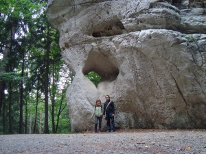

Ano, já vím, vím, že jsem ostuda. Už dva měsíce mi ta knížka leží na nočním stolku a já nebyla schopná ji přečíst. Dokud jsem neodstátnicovala, měla jsem samozřejmě přísný zákaz se na ni byť jen podívat, ale od té doby už pro mě není žádné omluvy – dočetla jsem ji zkrátka až teď :D. Co vám mám povídat, bylo to super! Larsson je mistrem v udržení napětí a přesně ví, jak ho má čtenáři dávkovat. Dívka, která kopla do vosího hnízda je jedno velké gradující finále. Hra, která se rozehrála ve druhém díle, spěje ke svému nezvratnému konci a čtenář nedočkavě sleduje, jestli v příběhu Lisbeth Salanderové zvítězí spravedlnost nebo důmyslně organizovaná síť podvratných živlů… I v závěru knihy, kdy už se zdá, že se všechno v dobré obrací, nám Larsson přivodí poslední infarktové stavy a strach o životy hlavních hrdinů, než nám konečně dovolí s úlevou vydechnout.
Samozřejmě bych měla i pár poznámek k tomu, co se mi moc nelíbilo. Larsson si v tomto díle mohl odpustit milostnou zápletku. Mně už to přijde fakt trapný, jak Mikaelovi Blomkvistovi žádná ženská nemůže odolat – vám ne :D?? Nicméně po přečtení Milénia už mám na švédský sexuální život utvořený svůj názor – je to zvrhlá země 8-). Dále mě trochu zklamalo to množství „happy endů“. Přestože jsem příznivcem dobrých konců a špatný by mě naštval :D, přecijen to příběhu ubralo v mých očích jistou dávku uvěřitelnosti. Ale oukej; poté, co se Lisbeth Salanderová ve druhém díle s kulkou v hlavě vyhrabala ze svého vlastního hrobu, smířila jsem se s tím, že si Larsson místy ulítává trochu do sci-fi 8-)…
Tak či tak, je mi líto, že to skončilo a Larsson už nikdy nic nenapíše. Byl to bezpochyby jeden z největších literárních talentů současnosti a jeho Millénium se stalo nejen světovým bestsellerem, ale také výpovědí o stavu dnešní společnosti.
Než definitivně odpadnu po dnešním výletu do Koryčan (který byl mimochodem super a snad se časem dokopu přidat sem aspoň pár fotek), podělím se s vámi o několik kosmetických úlovků tohoto léta…
Deodorant Rexona fresh – zelená Rexona je snad už od puberty můj ze všech nejmilejší deodorant, ke kterému se pořád vracím. Krásně voní, funguje jak má, je bez alkoholu… má účinkovat 48 hodin, což sice pravda není :D, ale i tak mi přijde, co se týče výdrže, víc než dobrá. Nedělá bílé fleky na oblečení, a na to já jsem pes!
Lak na vlasy pro objem vlasů, Lybar – se svým aktuálním sestřihem jsem omezila gely na vlasy a začala víc používat laky. Tyhle od Lybaru mi příjdou všechny celkem stejně dobré a mám ráda jejich stylové retro obaly :D. Obsahují antioxidanty, UV filtry, což se teď v létě hodí, a vlasy moc neslepují. Fixace by mohla být lepší, ale mně to vcelku stačí. Akorát ten větší objem jsem opravdu nezpozorovala…
Čistící ubrousky pro normální a smíšenou pleť, Balea jsem si vzala z čistě praktického hlediska na dovolenou, protože na cesty se mi opravdu nechce tahat všechny ty odličovače, vatové tamponky a tak. Na těch pár dnů ubrousky podle mě bohatě stačí, ikdyž jsem stejně přesvědčená, že tak dobře jako odličovací mléko mi obličej prostě nic nevyčistí. Koneckonců po návratu z dovolené jsem měla pleť trochu mastnější a celkově nějak ucpanou, tak si myslím, že na mých slovech přece jen něco bude. Jinak jsou ale tyhle ubrousky od Baley fajn. Voní hodně podobně jako ty pro citlivou pleť a odličuje se s nimi stejně dobře, možná jsou jen o něco mastnější.
Sprchový gel s kokosem a květy Tiaré, Balea – já nic, já muzikant, to je Péťův sprcháč :D! O svém postoji ke kokosové vůni v kosmetickém průmyslu už jsem v DROGa rubrice jistě hovořila. Nicméně mi to nedalo a musela jsem ten sprcháč vyzkoušet – čistě pro účely tohoto článku :D. A výsledek? Musím říct, že ta vůně není až tak špatná. Víc než kokos mi připomíná nějaké sladké cukroví :-). Asi to ani tak nebude můj šálek čaje, ale třeba Péťa ji zbožňuje, takže je to prostě otázka vkusu.
Sprchový gel Guava, Balea – aby mi to nebylo líto, pořídila jsem si taky jeden Balea sprcháč, tentokrát s vůni guavy. Vůně je hodně sladká, ovocná a pronikavá, při sprchování se hezky rozleze po koupelně, ale z těla ji už pak moc necítím. Sprcháč je hodně krémový a myslím, že nevysušuje – každopádně já se tak či tak po každé sprše musím něčím namazat, jinak bych se svou suchou kůží nedožila rána 8-). Celkově hodnotím Balea sprcháče kladně…a líbí se mi jejich barevné obaly :-)!
No a na závěr trocha té ochrany proti letnímu sluníčku…
Balzám na rty Sun, Isana
Tato pomáda mě popravdě docela zklamala – především je tyčinka strašně tuhá a pramálo hydratační – skoro bych až řekla, že rty přímo vysušuje. Navíc zanechává na rtech viditelný bílý povlak, což by se asi dalo zakrýt leskem nebo rtěnkou, ale i tak je to nepříjemné. Přes léto ji každopádně budu používat – má SPF 20 a obsahuje UVA i UVB filtry. Za sebe ale říkám „nikdy víc“…
Mléko na opalování Sensitiv SPF 25, Sun Ozon – další prázdninová nutnost, zvlášť pro mě a mou pokožku, která je schopná spálit se kdekoliv a kdykoliv (ano, dokázala jsem si spálit už i pupík a kůži mezi prsty na nohou 8-)). Toto mléko je určeno pro pokožku citlivou na sluneční záření se sklonem k podráždění, tudíž něco přesně pro mě. Mléko má světle žlutou barvu a je poměrně tekuté, takže se na rozdíl od řady podobných přípravků dá dobře rozmazat a nezanechává pak bílé šmouhy na oblečení ani nějak extra lepkavý pocit. Vůně je neutrální – prostě taková ta typická pro přípravky na opalování, která ve mně vždycky evokuje atmosféru prázdnin :). Musím říct, že od té doby, co ho používám, ještě jsem se nespálila, což je dobré znamení. Pokud toto mléko zatoužíte vyzkoušet, prodává ho drogerie Rossmann.
Myslím, že nadešel čas zrekapitulovat poslední část dovolené v Českém ráji, než to všechno zapomenu :-). Sobota měla být dle předpovědi deštivá, zvolili jsme tedy jako nejvhodnější program cestu po okolních hradech a zámcích, kde se bude dát v případě nepřízně počasí schovat. Úplně ze všeho nejdříve jsme ale zamířili do Rovenska pod Troskami, kde se nachází známá zvonice se třemi zvony obrácenými srdcem vzhůru. K této zajímavé raritě se váže pověst, která praví, že obrácené zvony nechala udělat vrchnost jako trest rovenským rebelům, kteří se bránili katolické víře, aby se nemohli tak snadno svolávat zvoněním. Rovenští však vymysleli způsob, jak zvony uvést do pohybu, a sice důmyslným, ale také poměrně nebezpečným systémem šlapání. Ten se udržel dodneška, a přestože už zvonice vypadá poměrně chatrně, stále se najde pár odvážlivců, kteří se tomuto adrenalinovému umění rádi přiučí. Zvoní se nicméně „jen“ v neděli a při výjimečných příležitostech.
Obrácené zvony v Rovensku
Z Rovenska jsme pokračovali do Turnova na zámek Hrubý Rohozec. Ten sice zvenčí vypadá (zejména v kontextu většiny hradů a zámků v okolí) poněkud zanedbaně, ale byla by velká škoda ho obejít, protože ukrývá krom zajímavé historie také překrásné původně zařízené interiéry. Předchůdcem dnešního zámku byl raně gotický hrad postavený po roce 1300. Na počátku 16.století došlo k přestavbě Hrubého Rohozce na pohodlné pozdně gotické sídlo. Zámek byl aktivně obýván v podstatě až do 2. světové války a do té doby si prošel celou řadou dalších přestaveb a úprav. V roce 1628 získal zámek do svého vlastnictví Mikuláš Des Fours, jehož rod pak Hrubý Rohozec obýval až do konfiskace v roce 1945. Interiéry zámku jsou prezentovány v původní podobě ze 30. let, kdy zde žil předposlední majitel Hrubého Rohozce hrabě Mikuláš Vladimír Des Fours Walderode. Jeho životní příběh je poměrně kontroverzní. Mikuláš se už od mládí zajímal o historii svého rodu a ušetřil historikům spoustu práce tím, že nechal popsat téměř každý portrét a řadu předmětů na zámku. Ve 30. letech se však přiklonil k fašismu a v roce 1938 se stal členem Sudetoněmecké strany. Jeho manželka i prvorozený syn tak učinili rovněž, mladší synové vstoupili do Hitlerjugend. Záhy se ukázalo, že tím si celá rodina podepsala ortel. Mladší syn zahynul na frontě, Mikuláš (coby těžký kuřák) ještě za války zemřel na rakovinu hrtanu a manželka s druhým synem umírají za ne zcela vyjasněných okolností záhy po skončení války. Musím říct, že přestože Hrubý Rohozec rozhodně nepatří k těm nejvyhledávanějším památkám v Českém ráji, mě jeho příběh a celková atmosféra zaujaly snad nejvíc.
Hrubý Rohozec
Po návštěvě zámeckého parku jsme vyrazili vzhůru za další památkou – malebným zámkem Sychrov.
Na Sychrově
Sychrov je opravdu okouzlující místo, natáčela se tu nejedna pohádka a protože byla zrovna sobota a počasí se umoudřilo, proháněla se po rozlehlém zámeckém parku také nejedna nevěsta :D…
Zámek Sychrov zezadu
Ani zde jsme si nenechali ujít prohlídku hlavního okruhu, nicméně byli jsme z ní poměrně zklamaní. Skupinku tvořilo příliš mnoho lidí a sychrovské komnaty jsou dost malé, takže se několikrát stalo, že jsme se buď mačkali v jedné místnosti nebo část skupinky zaostávala ve vedlejší místnosti, protože už by se nevešla. Tak či tak to dost kazilo dojem z prohlídky a jako bonus výklad neustále narušovalo neuvěřitelně zlobivé dítě, kterému rodiče nebyli schopni ucpat ústní otvor, což průvodkyni dost točilo (ani se nedivím), takže jim pak po skončení prohlídky sotva odpověděla na pozdrav.
V zámeckém parku
Abychom si zpravili náladu, vydali jsme se na procházku po upraveném zámeckém parku, který skrývá spoustu hezkých zákoutí, například vyhlídku, z které jsme krásně viděli na Ještěd. Po obědě jsme se ještě vydali pro kešku k památníku připomínajícímu návštěvu císaře Františka Josefa na Sychrově. Před odjezdem jsme se cestou k autu potěšili pohledem na stádo koziček pasoucích se za plotem a už jsme frčeli za další pamětihodností.
Frýdštejn
Čtvrtou zastávkou se pro nás stala působivá zřícenina hradu Frýdštejn. Bohužel jsme se na Sychrově zdrželi moc dlouho a prohlídku jsme už nestihli, ale vydrápali jsme se alespoň na louku nad Frýdštejnem, kde jsme si užili skoro stejně krásný výhled, jako z hradní věže. Na Frýdštejně se mi líbilo možná úplně ze všeho nejvíc a kdybychom neměli ten den před sebou ještě další program, asi bych v trávě pod hradem s okouzlujícím výhledem seděla dodnes :)…
Měli jsme v plánu navštívit ještě nedaleký hrad Vranov, ale nakonec jsme tento nápad opustili a vydali se raději do Malých Skal. Vranov nás přesto neminul, jeho silueta na skalách je k nepřehlédnutí. Za jeho fotkou jsme neváhali zajet do uzoučké obytné zóny, odkud byl pěkně vidět.
Vranov...fotka, jejíž pořízení nás málem stálo levé zpětné zrcátko 8-)
Poslední štací toho dne se tedy stal skalní labyrint v Malých skalách, které jsou možná neprávem turisty opomíjené. Nám se tu líbilo moc a litovali jsme, že nám na tuto část zbylo jen něco přes hodinku. Na večer jsme totiž opět měli objednanou večeři z voucheru O:-), takže jsme se museli do 9ti vrátit do penzionu.
Skalní labyrint
Uteklo to jako nic a byl tu poslední den dovolené. Pokusili jsme se z něj vytěžit maximum a navštívit 3 zajímavá místa, která jsme dosud nestihli. Nejprve jsme se tedy vyšplhali na rozhlednu Tábor, vedle které jsme celou dobu bydleli, a tak by byla škoda ji opomenout. Nabízí prý jeden z nejkrásnějších výhledů na naši zem a musím říct, že je to pravda. Ráno se sice po obloze honily mraky, ale i navzdory tomu ten výhled stál zato…
Výhled z Tábora
Dále naše cesta vedla na zříceninu hradu Valečov, jehož malebnost inspirovala i Karla Hynka Máchu, který toto místo několikrát navštívil a dochovalo se dokonce několik jeho skic, na kterých Valečov zachytil. Jedná se o poměrně zachovalou zříceninu s dlouhou historií. Náš pan průvodce byl ale děsný suchar (byť měl na sobě kovbojský obleček :D) a u jeho výkladu jsem pospávala, tak vám toho k historii Valečova moc neřeknu :D.
Valečov
A na konec naší dovolené jsme si nechali turisty okupované Drábské světničky, které jsou od Valečova coby kamenem. Šplhá se k nim po místy docela nebezpečných schůdcích a žebřících a fakt nechápu, kde se tam nahoře vzalo tolik dětí a psů :D. Každopádně je to další z místních skalních zajímavostí, které stojí zato vidět na vlastní oči. Archeologické nálezy svědčí o tom, že Drábské světničky byly osídleny od 12. do 15. století. Zdá se, že dřevěný a ve skále vytesaný hrad, po němž se zde zachovaly stopy, byl poslední etapou stálého osídlení. Není však vyloučeno, že světničky byly využívány jako příležitostného útočiště ještě mnohem později.
Drábské světničky
Z Drábských světniček nás nakonec vyhnal liják i tlačící čas – čekala nás totiž ještě dlouhá cesta domů. Naštěstí jsme ji zvládli poměrně rychle a krom bloudění na začarovaném kruhovém objezdu v Kolíně i bez větších potíží :). Jsem ráda, že jsme toho stihli tolik, ale mít ještě pár dnů navíc, určitě bychom věděli, co s nimi. Prostě i ta nejlepší dovolená má svou vadu – hrozně rychle uteče O:)…
Konečně přináším pokračování našeho putování po Českém ráji. Třetí den dovolené jsme zahájili další známou místní dominantou – hradem Trosky. Když jsem zde byla naposledy, byla zpřístupněna pouze jedna věž, ale dnes už je možné vylézt na obě, protože k té nižší, Babě, bylo přistaveno schodiště. Trosky jsou opravdu působivou památkou, kterou při návštěvě Českého ráje prostě nemůžete vynechat. Díky své poloze i výrazné podobě jsou Trosky dobře vidět ze spousty jiných turisticky atraktivních míst Ráje, a když se před vámi při cestování náhodou vyloupne jejich obrys, je to úchvatný pohled, kvůli kterému neváháte zastavit mezi poli a fotit jako o život :-)…
Na Troskách
Trosky vyrostly na dvou čedičových homolích koncem 14. století. O tom, jak hrad vypadal v době svého vzniku, se mnoho neví, protože se nedochoval žádný obraz ani rytina. Už za třicetileté války byl hrad opuštěný a zpustlý a teprve v období romantismu, kdy se stal zdrojem inspirace pro řadu malířů i básníků, došlo k jistému oprášení jeho zašlé slávy. V roce 1928 se staly Trosky majetkem Klubu českých turistů.
Pohled na Babu
Z Trosek vedly naše kroky do nedalekých Hrubých skal. Počasí nám ten den moc nepřálo, ale prý se tu stejně tma a vlhko drží po celý rok. Hrubé skály mají trochu jinou atmosféru než ty Prachovské, nicméně i zde si přijdou na své milovníci malebných vyhlídek a rozličných skalních útvarů. Okruh je mnohem delší, než ten v Prachovských skalách – dohromady jsme v Hrubých skalách strávili neuvěřitelných 7 hodin a nachodili 9 kilometrů, což nás tedy pěkně odrovnalo :-)…
Hrubé skály
Jedním z nejzajímavějších a zřejmě i nejznámějších hruboskalských útvarů je toto skalní okno. Váže se k němu pověst, která praví, že kdo se k němu postaví zády a podaří se mu prohodit otvorem šišku, tomu se splní přání. Před 13ty lety se mi to nepodařilo, ale od té doby jsem hodně trénovala :). A kdyby vás to zajímalo, přála jsem si, aby se zlepšilo to mizerné počasí, což se na druhý den navzdory nepříznivé předpovědi skutečně vyplnilo :O!
Skalní oknoVe skalách je všechno taaak veliké...
V Hrubých skalách rozhodně nesmíte minout Mariánskou vyhlídku, která nabízí krásný pohled na zámek Hrubá Skála i vzdálenější Trosky.
Zámek Hrubá SkálaNa Mariánské vyhlídce
Cestou jsme minuli i několik pramenů – nacházeli jsme se koneckonců v tu chvíli jen malý kousek od Sedmihorek, někdejších lázní, kde jsme tenkrát před 13ti lety s našima bydleli – a v lesích jsme dokonce narazili na skřítka O:)…
Lesní skřítekSkály, kam se podíváš
Z hruboskalského okruhu jsme posléze odbočili na cestu k nedalekému hradu Valdštejn. Před hradem jsme se však zastavili na kávičku a místní pivo Rohozec, takže jsme poslední prohlídku nakonec těsně nestihli (holt pátek třináctého 8-)). I tak jsme si ale nakonec Valdštejn prohlédli, byť „zespoda“ :D.
Odpolední kafíčkoPod hrademValdštejn
Při zpáteční cestě z Valdštejna nás bohužel opět dostihlo nepříznivé počasí a protentokrát už se nás jen tak nepustilo. Vydatně lilo, až dokud jsme nedošli k poslední známé vyhlídce – vyhlídce na Kapelu, nádherný skalní útvar, který se toho času halil do oblaků stoupající páry.
Pan Tau :)Krásné i za deště :)
Naší poslední zastávkou se stal skalní útvar známý jako „Adamovo lože“, a pak už jsme běželi osušit se do auta. Vzhledem k tomu, že jsme se ve skalách zdrželi opravdu strašně dlouho, dorazili jsme na naše parkoviště až někdy před osmou večer. Hlídači už tu pochopitelně nestáli, platilo se až při odjezdu a tudíž jsme to měli opět zadáčo :). Za ušetřené peníze jsme se rozhodli zajít si někam na večeři… a sám osud nás zavedl do tohoto stylového lokálu…:D
Hostinec
Typická vesnická hospoda, jako vystřižená z trilogie Slunce, seno, kde každý nově příchozí vzbudí nebývalý rozruch :D. Zcela instinktivně jsme se zašili do nejzastrčenějšího koutu hospody, ignorovali bujaré pozdravy party postarších cyklistů od vedlejšího stolu a vyčkávali příchodu obsluhy. Obsloužit nás přišla exoticky vyhlížející dívka – záhy se ukázalo, že pochází z Filipín – následovaná panem vrchním, který nám předložil jídelní lístek se slovy: „Těch prvních 5 pokrmů není problém, knedlík s vajíčkem…hmm, no to bych snad zvládl, ale ty ostatní věci si radši neobjednávejte.“ :DDD Nakonec jsme risknuli malou kofolu a knedlíky se zelím, plněné uzeným. Na to, že celá hospoda zvenčí i zevnitř vyhlížela stylem „nejnižší cenová skupina“, jídlo bylo překvapivě dobré. A protože byl pátek, nepřišli jsme ani o hudební vložku v podobě místního multiinstrumentalisty, který dokázal rozbalit kdejakej hit od starých dobrých českých šedesátek přes Tinu Turner až po Boba Marleyho :D… Prostě úlet :D!
Hudební vložka musí bejt!
Interiér se nám bohužel nepodařilo příliš věrně zachytit – až budete mít cestu kolem, prostě se musíte zastavit, protože to se slovy popsat nedá 8-)…
"Nefoť nás, my nechcem být v novinách :D!"
Po tomto nevšedním zážitku jsme se konečně vydali na zpáteční cestu domů do Lomnice. Ani tento poslední úsek dne se však neobešel bez trochy adrenalinu – asi v polovině trasy jsme se setkali se srnkou, která stála přímo uprostřed silnice. Překvapilo mě, jak byla veliká – zdálky se mi zdálo, že to snad musí být kráva :D. Naštěstí měla srna sama dost rozumu na to, aby se nám klidila z cesty, nicméně po zbytek jízdy jsme bedlivě střežili okolní louky a pastviny a skutečně jsme se přesvědčili o tom, že tento kraj je bohatý nejen na lesní plody, nýbrž i na lesní zvěř 8-). Žádná nám už ale pak naštěstí cestu nezkřížila.
Řekla bych, že na jeden den bylo těch dobrodružství a zážitků až až :-)! Na závěr už snad jen jeden snímek pořízený na zpáteční cestě mezi poli. Myslím, že vůbec nepotřebuje komentář… prostě Ráj :-)!
Je to přesně třináct let, co jsem toto krásné zákoutí naší země navštívila poprvé, a už tenkrát se mi tam moc líbilo. Krom zajímavých skalních útvarů a přírodních krás nabízí spoustu možností k výletům také milovníkům historie. Nachází se zde tolik hradů, zámků a zřícenin, že by člověk potřeboval alespoň měsíc na to, aby je stihnul všechny navštívit. Protože Mládkův song o Prachovských skalách je příliš provařený, zvolila jsem na uvedení dnešního toulavého článku starého dobrého Káju. A vy jste se už určitě dovtípili, že tentokrát jsme se s Péťou toulali po Českém ráji :-)…
Pobyt jsme sehnali již klasicky přes Slevomat – původně byl určen jen na 2 noci, proto jsme pořídili vouchery rovnou dva a dovolenou si tak prodloužili na 5 dnů, což už je solidní doba na to, abychom stihli v Českém ráji navštívit ta nejzajímavější místa. Náš penzion se nacházel v Lomnici nad Popelkou, přímo na vrcholu Tábor, kde dříve stávala rozhledna s turistickou chatou. Ta se před pár lety konečně dočkala rekonstrukce a dnes zde najdete příjemný penzionek s opět přístupnou rozhlednou.
Protože první den jsme dorazili až pozdě odpoledne, rozhodli jsme se vyrazit jen na menší výšlap k Allainově věži a na nedalekou zříceninu hradu Kozlov.
Allainova věž
Byla jsem docela zklamaná, že z hradu toho krom hromady kamení, hradního příkopu a tajemného vchodu do podzemí, o kterém se dodnes spekuluje, k čemu vlastně sloužil, moc nezbylo. Výlet to byl ale pěkný a místo večeře jsme se nakrmili v lese spoustou malin a rybízu :D. Prohlédli jsme si také část vesnice Košov, ve které se, stejně jako ve spoustě okolních vesnic, zachovala řada pěkných roubených chaloupek. Byť se jednalo o ne příliš dlouhý výšlap, docela nás zničil a brzy po návratu jsme znaveni odpadli (jistý podíl viny na tom nejspíš měla i lahev růžového vína :D…)
No není to ráj :)?
Druhý den jsme se rozhodli navštívit rovnou tři zajímavá místa. Nejprve jsme vyrazili do Sobotky, kde se nachází lovecký zámek Humprecht, který byl postaven v letech 1666-68 pro hraběte Humprechta Jana Černína z Chudenic. Zámek má netypický tvar dvou elipsoidů, a jelikož se nachází na návrší nad Sobotkou, je už z dálky k nepřehlédnutí. Původně jsme ani neměli v plánu jít se podívat dovnitř, ale náhodou jsme se trefili zrovna do začátku prohlídky, a tak jsme se rozhodli, že se připojíme.
Humprecht
Krom stálé expozice jsme si zaplatili také vstup na věž, do které vedlo poměrně příkré adrenalinové schodiště. Vědět to dopředu, asi si tu věž ještě rozmyslím – teď už se ale nedalo nic dělat :D… Výhled na Sobotku i nedaleký hrad Kost ale stál zato :-).
Vstup do věže
Na Kost koneckonců vedla i naše příští cesta. Kost, která v současnosti patří rodu Kinských, je jedním z nejzachovalejších středověkých hradů v Čechách a i navzdory rekonstrukci si zachovala své mimořádné kouzlo.
Kost
Nemohli jsme se rozhodnout, jestli navštívíme hlavní expozici nebo mučírnu s výkladem o českém právu trestním, ale protože prohlídka hlavního okruhu začínala za pár minut, rozhodli jsme se nakonec pro ni. Příště už ale určitě do mučírny půjdeme :-)!
Hradní kaple
Na Kosti se nám poprvé podařilo obelstít placená parkoviště, která se bohužel v Českém ráji nachází úplně všude. Na druhou stranu je však téměř všude možné nějakým způsobem se jim vyhnout. Tady na Kosti jsme problém vyřešili tak, že jsme nadrzo zaparkovali na volném plácku přímo podél parkoviště :D. Po zajímavé prohlídce jsme se vydali ještě směrem k údolí Plakánek, kde se právě konaly rytířské souboje, pro kešku. V hustých lesích jsme kromě kešky objevili přímo borůvkové moře a opět jsme se s modrými ústy utvrdili v tom, že místní lesy jsou velmi plodné :D!
Naší poslední zastávkou se stala (právem) turisticky nejprofláklejší oblast Českého ráje – Prachovské skály. Tady nejspíš své vyprávění pro dnešek ukončím a přidám odsud ještě několik fotek, které bylo opravdu těžké navybírat. Jestli vás nenavnadí hrady a zámky, tato krása vytvořená přírodou vás v Českém ráji ohromí zcela jistě…
V Prachovských skalách
No, a na závěr si trochu uděláme chutě :D… V ceně voucheru bylo několik dalších bonusů jako možnost návštěvy sauny, welcome drink a také báječná tříchodová večeře s vínkem. Na talíři chybí jedno maso, na které jsem se hladově vrhla, než jsem si stačila uvědomit, že bychom si mohli naši večeři vyfotit, tak pardón :D…
Mňamka
A to už je opravdu konec. O dalších krásách Českého ráje zase někdy příště :)…
Už se tu myslím celkem dlouho nic pořádného nevařilo, a tak jsem se rozhodla podělit se o jeden recept z mého nejmilejšího kulinářského magazínu FOOD. Potřebovat budeme:
kuřecí řízky rozklepané dotenka
2 lžíce kremžské nebo hrubozrnné dijonské hořčice
1-2 vejce
strouhanku na obalení
1 stroužek česneku, rozdrcený
olivový olej na smažení
2 lžíce čerstvé citronové šťávy
plátky citronu a bazalku na ozdobení
V misce nebo hlubokém talíři prošleháme vejce s hořčicí a česnekem. Plátky masa namáčíme nejprve ve vejcích, pak protáhneme strouhankou a dobře ji přitiskneme. Smažíme na rozehřátém oleji dozlatova jako běžné řízky. Usmažené dáme stranou. Citronovou šťávu pak jen krátce prohřejeme spolu s plátky citronu, můžeme přidat trochu drůbežího vývaru a nasekanou bazalku. Řízky přelijeme šťávou a servírovat můžeme s kuskusem :-)…
Tak, a je definitivně po všem. Složila jsem slib, převzala diplom a potřásla proděkanovou rukou (toho času v ortéze :D). Musím přiznat, že na to, jak jsem se celé té velké maškarády s názvem „promoce“ obávala, byl to jeden z nejhezčích zážitků na půdě naší školy a na následnou afterparty myslím budeme všichni ještě dlouho vzpomínat :D…
Projev docenta Kotáska
Atmosféra byla hodně uvolněná, všichni se na nás usmívali a dokonce i naše studijní referentka, se kterou jsem se chytla po státnicích kvůli přelepce na ISIC, se nám omluvila, pokud na nás někdy byla na studijním nepříjemná – málem mi slza ukápla :D! Při instrukcích mi trochu ztuhnul úsměv na rtu, když jsem se dozvěděla, že nebudeme dělat jen jedno kolečko jako na VUT, ale dokonce TŘI. Utěšovalo mě jen to, že nestojím na začátku ani na konci a nemusím číst studentský projev :D…
Poté, co jsme s referentkou probrali scénář promoce, strhla se bitka o taláry :D. Podařilo se mi hbitě ukořistit jednu z mála velikostí M. Nakonec jsem byla ráda, že ty taláry máme, protože jsem zjistila, že sympatická slečna po mé levici má úplně stejné šaty jako já, hrozné faux pass :D!
"Zavazuji se a slibuji..."
Obřad sám o sobě byl hezký a utekl tak rychle, že jsem si ho skoro ani nestihla užít. Milé bylo, že mezi akademickými hodnostáři zasedali dva, na které budu ráda vzpomínat. Docent Kotásek mě podržel na zkoušce z obchodního práva a jen díky výjimce proděkana Mrkývky mě pustili ke státnicím v řádném termínu. Po úvodních fanfárách a hymně měl projev docent Kotásek a šlo se první „ukláněcí“ kolečko :D. Ve druhém kolečku jsme skládali slib a v posledním třetím jsme si konečně z rukou proděkana Mrkývky převzali diplomy. Na závěr ještě zazněl studentský projev a samozřejmě Gaudeamus Igitur – a já si hned vzpomněla na Básníky :DDD…
"Pan proděkan má ruku v ortéze, tak mu s ní při gratulaci prosimvás moc netřepte!" :D
Po promoci nás ještě fotograf nahnal na schody na společné absolventské foto a pak už jsem skončila v obležení rodiny, květin a všeobecného zmatku :D…
Rezervačku jsme měli u Černého Orla, takže po povinném focení s Benešem a s fakultou jsme se museli všichni naskládat do čtyř aut a vyrazit napřed na byt (zapít tu slávu :D) a poté do KM. U Orla to bylo báječný, ale i přes otevřená okna tam bylo příšerné horko, takže jsme se brzy po jídle přesunuli na „afterpárty“ k tetě na zahradu, kde jsme setrvali ve stínu jabloně až do večera.
Kdyby nic jinýho… za tuhle báječnou oslavu, kterou mi rodina připravila, těch pět let na výšce prostě stálo :D!
No a na závěr trochu té květeny, než to v tom tropickém hicu všecko zvadne :D…


{kind=link}
{kind=link}
{kind=link}
{kind=link}
{kind=link}
{kind=link}
{kind=link}
{kind=link}
{kind=link}
{kind=link}
{kind=link}
{kind=link}
{kind=link}
{kind=link}
{kind=link}
{kind=link}
{kind=link}
{kind=link}
{kind=link}
{kind=link}
{kind=link}
{kind=link}
{kind=link}
{kind=link}
{kind=link}
{kind=link}
{kind=link}
{kind=link}
{kind=link}
{kind=link}
{kind=link}
{kind=link}
{kind=link}
{kind=link}
{kind=link}
{kind=link}
{kind=link}
{kind=link}
{kind=link}
{kind=link}
{kind=link}
{kind=link}
{kind=link}
{kind=link}
{kind=link}
{kind=link}
{kind=link}
{kind=link}
{kind=link}
{kind=link}
{kind=link}
{kind=link}
{kind=link}
{kind=link}
{kind=link}
{kind=link}
{kind=link}